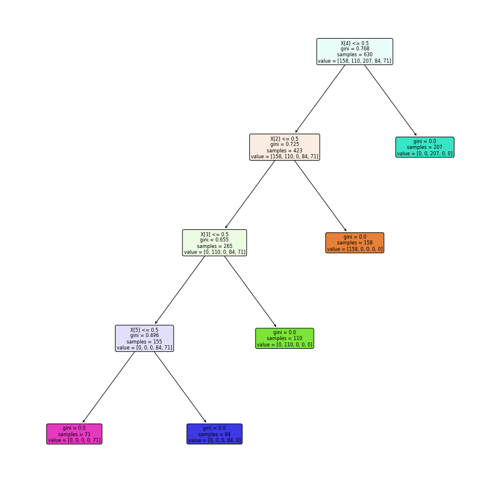

Studi Kasus Dataset Credit Score (Tugas 7)
Contents
Studi Kasus Dataset Credit Score (Tugas 7)#
Tahap Preprocessing Data#
import numpy as np
from sklearn import preprocessing
import pandas as pd
dataset = pd.read_csv("https://raw.githubusercontent.com/arsymaulanaali/datamining/main/credit_score1.csv")
dataset.head()
| Unnamed: 0 | kode_kontrak | pendapatan_setahun_juta | kpr_aktif | durasi_pinjaman_bulan | jumlah_tanggungan | rata_rata_overdue | risk_rating | |
|---|---|---|---|---|---|---|---|---|
| 0 | 1 | AGR-000001 | 295 | YA | 48 | 5 | 61 - 90 days | 4 |
| 1 | 2 | AGR-000011 | 271 | YA | 36 | 5 | 61 - 90 days | 4 |
| 2 | 3 | AGR-000030 | 159 | TIDAK | 12 | 0 | 0 - 30 days | 1 |
| 3 | 4 | AGR-000043 | 210 | YA | 12 | 3 | 46 - 60 days | 3 |
| 4 | 5 | AGR-000049 | 165 | TIDAK | 36 | 0 | 31 - 45 days | 2 |
df_without_column_for_convert = pd.DataFrame(dataset, columns = ['kode_kontrak','pendapatan_setahun_juta','durasi_pinjaman_bulan','jumlah_tanggungan','risk_rating'])
df_without_column_for_convert.head()
| kode_kontrak | pendapatan_setahun_juta | durasi_pinjaman_bulan | jumlah_tanggungan | risk_rating | |
|---|---|---|---|---|---|
| 0 | AGR-000001 | 295 | 48 | 5 | 4 |
| 1 | AGR-000011 | 271 | 36 | 5 | 4 |
| 2 | AGR-000030 | 159 | 12 | 0 | 1 |
| 3 | AGR-000043 | 210 | 12 | 3 | 3 |
| 4 | AGR-000049 | 165 | 36 | 0 | 2 |
df_ratarata=pd.get_dummies(dataset['rata_rata_overdue'])
df_ratarata.head()
| 0 - 30 days | 31 - 45 days | 46 - 60 days | 61 - 90 days | > 90 days | |
|---|---|---|---|---|---|
| 0 | 0 | 0 | 0 | 1 | 0 |
| 1 | 0 | 0 | 0 | 1 | 0 |
| 2 | 1 | 0 | 0 | 0 | 0 |
| 3 | 0 | 0 | 1 | 0 | 0 |
| 4 | 0 | 1 | 0 | 0 | 0 |
df_kpr_aktif=pd.get_dummies(dataset['kpr_aktif'])
df_kpr_aktif
| TIDAK | YA | |
|---|---|---|
| 0 | 0 | 1 |
| 1 | 0 | 1 |
| 2 | 1 | 0 |
| 3 | 0 | 1 |
| 4 | 1 | 0 |
| ... | ... | ... |
| 895 | 0 | 1 |
| 896 | 0 | 1 |
| 897 | 1 | 0 |
| 898 | 1 | 0 |
| 899 | 1 | 0 |
900 rows × 2 columns
df_new = pd.concat([df_without_column_for_convert, df_kpr_aktif,df_ratarata], axis=1)
df_new.head()
| kode_kontrak | pendapatan_setahun_juta | durasi_pinjaman_bulan | jumlah_tanggungan | risk_rating | TIDAK | YA | 0 - 30 days | 31 - 45 days | 46 - 60 days | 61 - 90 days | > 90 days | |
|---|---|---|---|---|---|---|---|---|---|---|---|---|
| 0 | AGR-000001 | 295 | 48 | 5 | 4 | 0 | 1 | 0 | 0 | 0 | 1 | 0 |
| 1 | AGR-000011 | 271 | 36 | 5 | 4 | 0 | 1 | 0 | 0 | 0 | 1 | 0 |
| 2 | AGR-000030 | 159 | 12 | 0 | 1 | 1 | 0 | 1 | 0 | 0 | 0 | 0 |
| 3 | AGR-000043 | 210 | 12 | 3 | 3 | 0 | 1 | 0 | 0 | 1 | 0 | 0 |
| 4 | AGR-000049 | 165 | 36 | 0 | 2 | 1 | 0 | 0 | 1 | 0 | 0 | 0 |
df_risk_rating = pd.DataFrame(dataset, columns = ['risk_rating'])
df_risk_rating.head()
| risk_rating | |
|---|---|
| 0 | 4 |
| 1 | 4 |
| 2 | 1 |
| 3 | 3 |
| 4 | 2 |
df_without_risk_rating=df_new.drop(['risk_rating'], axis=1)
df_new2 = pd.concat([df_without_risk_rating,df_risk_rating], axis=1)
df_new2
| kode_kontrak | pendapatan_setahun_juta | durasi_pinjaman_bulan | jumlah_tanggungan | TIDAK | YA | 0 - 30 days | 31 - 45 days | 46 - 60 days | 61 - 90 days | > 90 days | risk_rating | |
|---|---|---|---|---|---|---|---|---|---|---|---|---|
| 0 | AGR-000001 | 295 | 48 | 5 | 0 | 1 | 0 | 0 | 0 | 1 | 0 | 4 |
| 1 | AGR-000011 | 271 | 36 | 5 | 0 | 1 | 0 | 0 | 0 | 1 | 0 | 4 |
| 2 | AGR-000030 | 159 | 12 | 0 | 1 | 0 | 1 | 0 | 0 | 0 | 0 | 1 |
| 3 | AGR-000043 | 210 | 12 | 3 | 0 | 1 | 0 | 0 | 1 | 0 | 0 | 3 |
| 4 | AGR-000049 | 165 | 36 | 0 | 1 | 0 | 0 | 1 | 0 | 0 | 0 | 2 |
| ... | ... | ... | ... | ... | ... | ... | ... | ... | ... | ... | ... | ... |
| 895 | AGR-010739 | 112 | 48 | 5 | 0 | 1 | 0 | 0 | 0 | 0 | 1 | 5 |
| 896 | AGR-010744 | 120 | 48 | 2 | 0 | 1 | 0 | 0 | 1 | 0 | 0 | 3 |
| 897 | AGR-010758 | 166 | 24 | 2 | 1 | 0 | 1 | 0 | 0 | 0 | 0 | 1 |
| 898 | AGR-010775 | 196 | 48 | 0 | 1 | 0 | 0 | 1 | 0 | 0 | 0 | 2 |
| 899 | AGR-010790 | 204 | 24 | 2 | 1 | 0 | 1 | 0 | 0 | 0 | 0 | 1 |
900 rows × 12 columns
from sklearn.preprocessing import MinMaxScaler
df_for_minmax_scaler=pd.DataFrame(dataset, columns = ['pendapatan_setahun_juta','durasi_pinjaman_bulan','jumlah_tanggungan'])
df_for_minmax_scaler.to_numpy()
scaler = MinMaxScaler()
df_hasil_minmax_scaler=scaler.fit_transform(df_for_minmax_scaler)
df_hasil_minmax_scaler = pd.DataFrame(df_hasil_minmax_scaler,columns = ['pendapatan_setahun_juta','durasi_pinjaman_bulan','jumlah_tanggungan'])
df_hasil_minmax_scaler
| pendapatan_setahun_juta | durasi_pinjaman_bulan | jumlah_tanggungan | |
|---|---|---|---|
| 0 | 0.978261 | 1.000000 | 0.833333 |
| 1 | 0.873913 | 0.666667 | 0.833333 |
| 2 | 0.386957 | 0.000000 | 0.000000 |
| 3 | 0.608696 | 0.000000 | 0.500000 |
| 4 | 0.413043 | 0.666667 | 0.000000 |
| ... | ... | ... | ... |
| 895 | 0.182609 | 1.000000 | 0.833333 |
| 896 | 0.217391 | 1.000000 | 0.333333 |
| 897 | 0.417391 | 0.333333 | 0.333333 |
| 898 | 0.547826 | 1.000000 | 0.000000 |
| 899 | 0.582609 | 0.333333 | 0.333333 |
900 rows × 3 columns
df_drop_column_for_minmaxscaler=df_new2.drop(['pendapatan_setahun_juta','durasi_pinjaman_bulan','jumlah_tanggungan'], axis=1)
df_drop_column_for_minmaxscaler
| kode_kontrak | TIDAK | YA | 0 - 30 days | 31 - 45 days | 46 - 60 days | 61 - 90 days | > 90 days | risk_rating | |
|---|---|---|---|---|---|---|---|---|---|
| 0 | AGR-000001 | 0 | 1 | 0 | 0 | 0 | 1 | 0 | 4 |
| 1 | AGR-000011 | 0 | 1 | 0 | 0 | 0 | 1 | 0 | 4 |
| 2 | AGR-000030 | 1 | 0 | 1 | 0 | 0 | 0 | 0 | 1 |
| 3 | AGR-000043 | 0 | 1 | 0 | 0 | 1 | 0 | 0 | 3 |
| 4 | AGR-000049 | 1 | 0 | 0 | 1 | 0 | 0 | 0 | 2 |
| ... | ... | ... | ... | ... | ... | ... | ... | ... | ... |
| 895 | AGR-010739 | 0 | 1 | 0 | 0 | 0 | 0 | 1 | 5 |
| 896 | AGR-010744 | 0 | 1 | 0 | 0 | 1 | 0 | 0 | 3 |
| 897 | AGR-010758 | 1 | 0 | 1 | 0 | 0 | 0 | 0 | 1 |
| 898 | AGR-010775 | 1 | 0 | 0 | 1 | 0 | 0 | 0 | 2 |
| 899 | AGR-010790 | 1 | 0 | 1 | 0 | 0 | 0 | 0 | 1 |
900 rows × 9 columns
df_new3 = pd.concat([df_drop_column_for_minmaxscaler,df_hasil_minmax_scaler], axis=1)
df_new3
| kode_kontrak | TIDAK | YA | 0 - 30 days | 31 - 45 days | 46 - 60 days | 61 - 90 days | > 90 days | risk_rating | pendapatan_setahun_juta | durasi_pinjaman_bulan | jumlah_tanggungan | |
|---|---|---|---|---|---|---|---|---|---|---|---|---|
| 0 | AGR-000001 | 0 | 1 | 0 | 0 | 0 | 1 | 0 | 4 | 0.978261 | 1.000000 | 0.833333 |
| 1 | AGR-000011 | 0 | 1 | 0 | 0 | 0 | 1 | 0 | 4 | 0.873913 | 0.666667 | 0.833333 |
| 2 | AGR-000030 | 1 | 0 | 1 | 0 | 0 | 0 | 0 | 1 | 0.386957 | 0.000000 | 0.000000 |
| 3 | AGR-000043 | 0 | 1 | 0 | 0 | 1 | 0 | 0 | 3 | 0.608696 | 0.000000 | 0.500000 |
| 4 | AGR-000049 | 1 | 0 | 0 | 1 | 0 | 0 | 0 | 2 | 0.413043 | 0.666667 | 0.000000 |
| ... | ... | ... | ... | ... | ... | ... | ... | ... | ... | ... | ... | ... |
| 895 | AGR-010739 | 0 | 1 | 0 | 0 | 0 | 0 | 1 | 5 | 0.182609 | 1.000000 | 0.833333 |
| 896 | AGR-010744 | 0 | 1 | 0 | 0 | 1 | 0 | 0 | 3 | 0.217391 | 1.000000 | 0.333333 |
| 897 | AGR-010758 | 1 | 0 | 1 | 0 | 0 | 0 | 0 | 1 | 0.417391 | 0.333333 | 0.333333 |
| 898 | AGR-010775 | 1 | 0 | 0 | 1 | 0 | 0 | 0 | 2 | 0.547826 | 1.000000 | 0.000000 |
| 899 | AGR-010790 | 1 | 0 | 1 | 0 | 0 | 0 | 0 | 1 | 0.582609 | 0.333333 | 0.333333 |
900 rows × 12 columns
df_new3_without_risk_rating=df_new3.drop(['risk_rating'], axis=1)
df_new3_without_risk_rating
| kode_kontrak | TIDAK | YA | 0 - 30 days | 31 - 45 days | 46 - 60 days | 61 - 90 days | > 90 days | pendapatan_setahun_juta | durasi_pinjaman_bulan | jumlah_tanggungan | |
|---|---|---|---|---|---|---|---|---|---|---|---|
| 0 | AGR-000001 | 0 | 1 | 0 | 0 | 0 | 1 | 0 | 0.978261 | 1.000000 | 0.833333 |
| 1 | AGR-000011 | 0 | 1 | 0 | 0 | 0 | 1 | 0 | 0.873913 | 0.666667 | 0.833333 |
| 2 | AGR-000030 | 1 | 0 | 1 | 0 | 0 | 0 | 0 | 0.386957 | 0.000000 | 0.000000 |
| 3 | AGR-000043 | 0 | 1 | 0 | 0 | 1 | 0 | 0 | 0.608696 | 0.000000 | 0.500000 |
| 4 | AGR-000049 | 1 | 0 | 0 | 1 | 0 | 0 | 0 | 0.413043 | 0.666667 | 0.000000 |
| ... | ... | ... | ... | ... | ... | ... | ... | ... | ... | ... | ... |
| 895 | AGR-010739 | 0 | 1 | 0 | 0 | 0 | 0 | 1 | 0.182609 | 1.000000 | 0.833333 |
| 896 | AGR-010744 | 0 | 1 | 0 | 0 | 1 | 0 | 0 | 0.217391 | 1.000000 | 0.333333 |
| 897 | AGR-010758 | 1 | 0 | 1 | 0 | 0 | 0 | 0 | 0.417391 | 0.333333 | 0.333333 |
| 898 | AGR-010775 | 1 | 0 | 0 | 1 | 0 | 0 | 0 | 0.547826 | 1.000000 | 0.000000 |
| 899 | AGR-010790 | 1 | 0 | 1 | 0 | 0 | 0 | 0 | 0.582609 | 0.333333 | 0.333333 |
900 rows × 11 columns
df_new4 = pd.concat([df_new3_without_risk_rating,df_risk_rating], axis=1)
df_new4
| kode_kontrak | TIDAK | YA | 0 - 30 days | 31 - 45 days | 46 - 60 days | 61 - 90 days | > 90 days | pendapatan_setahun_juta | durasi_pinjaman_bulan | jumlah_tanggungan | risk_rating | |
|---|---|---|---|---|---|---|---|---|---|---|---|---|
| 0 | AGR-000001 | 0 | 1 | 0 | 0 | 0 | 1 | 0 | 0.978261 | 1.000000 | 0.833333 | 4 |
| 1 | AGR-000011 | 0 | 1 | 0 | 0 | 0 | 1 | 0 | 0.873913 | 0.666667 | 0.833333 | 4 |
| 2 | AGR-000030 | 1 | 0 | 1 | 0 | 0 | 0 | 0 | 0.386957 | 0.000000 | 0.000000 | 1 |
| 3 | AGR-000043 | 0 | 1 | 0 | 0 | 1 | 0 | 0 | 0.608696 | 0.000000 | 0.500000 | 3 |
| 4 | AGR-000049 | 1 | 0 | 0 | 1 | 0 | 0 | 0 | 0.413043 | 0.666667 | 0.000000 | 2 |
| ... | ... | ... | ... | ... | ... | ... | ... | ... | ... | ... | ... | ... |
| 895 | AGR-010739 | 0 | 1 | 0 | 0 | 0 | 0 | 1 | 0.182609 | 1.000000 | 0.833333 | 5 |
| 896 | AGR-010744 | 0 | 1 | 0 | 0 | 1 | 0 | 0 | 0.217391 | 1.000000 | 0.333333 | 3 |
| 897 | AGR-010758 | 1 | 0 | 1 | 0 | 0 | 0 | 0 | 0.417391 | 0.333333 | 0.333333 | 1 |
| 898 | AGR-010775 | 1 | 0 | 0 | 1 | 0 | 0 | 0 | 0.547826 | 1.000000 | 0.000000 | 2 |
| 899 | AGR-010790 | 1 | 0 | 1 | 0 | 0 | 0 | 0 | 0.582609 | 0.333333 | 0.333333 | 1 |
900 rows × 12 columns
Naive Bayes#
from sklearn.metrics import make_scorer, accuracy_score,precision_score
from sklearn.metrics import accuracy_score ,precision_score,recall_score,f1_score
from sklearn.metrics import confusion_matrix
from sklearn.model_selection import KFold,train_test_split,cross_val_score
from sklearn.naive_bayes import GaussianNB
from sklearn.model_selection import train_test_split
X=df_new4.iloc[:,1:10].values
y=df_new4.iloc[:,11].values
X_train,X_test,y_train,y_test=train_test_split(X,y,test_size=0.3,random_state=0)
gaussian = GaussianNB()
gaussian.fit(X_train, y_train)
Y_pred = gaussian.predict(X_test)
accuracy_nb=round(accuracy_score(y_test,Y_pred)* 100, 2)
acc_gaussian = round(gaussian.score(X_train, y_train) * 100, 2)
cm = confusion_matrix(y_test, Y_pred)
accuracy = accuracy_score(y_test,Y_pred)
precision =precision_score(y_test, Y_pred,average='micro')
recall = recall_score(y_test, Y_pred,average='micro')
f1 = f1_score(y_test,Y_pred,average='micro')
print('Confusion matrix for Naive Bayes\n',cm)
print('accuracy_Naive Bayes: %.3f' %accuracy)
print('precision_Naive Bayes: %.3f' %precision)
print('recall_Naive Bayes: %.3f' %recall)
print('f1-score_Naive Bayes : %.3f' %f1)
Confusion matrix for Naive Bayes
[[69 0 0 0 0]
[ 0 49 0 0 0]
[ 0 0 84 0 0]
[ 0 0 0 36 0]
[ 0 0 0 0 32]]
accuracy_Naive Bayes: 1.000
precision_Naive Bayes: 1.000
recall_Naive Bayes: 1.000
f1-score_Naive Bayes : 1.000
KNN Algorithm#
from sklearn.neighbors import KNeighborsClassifier
neigh = KNeighborsClassifier(n_neighbors=3)
neigh.fit(X_train, y_train)
acc_knn = round(neigh.score(X_train, y_train) * 100, 2)
print("Accuracy_KNN :",acc_knn)
Accuracy_KNN : 100.0
Decision Tree#
from sklearn.metrics import accuracy_score
from sklearn import tree
from sklearn import metrics
from matplotlib import pyplot as plt
# Menghitung akurasi dengan menggunakan gini indek
clf = tree.DecisionTreeClassifier(criterion="gini")
clf = clf.fit(X_train,y_train)
y_pred = clf.predict(X_test)
print("Accuracy_Decision Tree :",metrics.accuracy_score(y_test,y_pred))
Accuracy_Decision Tree : 1.0
# gambar bentuk decision tree
plt.figure(figsize=(15,15))
#create the tree plot
a = tree.plot_tree(clf,
rounded = True,
filled = True,
fontsize=8)
#show the plot
plt.show()
